임상심리사-2급 (2019-08-04 기출문제)
1과목: 심리학개론
1. 다음은 무엇에 관한 설명인가?
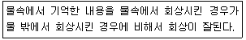
- 인출단서효과
- 맥락효과
- 기분효과
- 도식효과
(정답률: 72%)

2. 호감에 영향을 미치는 요인과 가장 거리가 먼 것은?
- 물리적 접근성
- 유사성
- 상보성
- 내향성
(정답률: 85%)
3. 뉴런이 휴식기에 있을 때의 상태로 옳은 것은?
- 칼륨 이온이 뉴런 밖으로 나간다.
- 나트륨 이온이 뉴런 안으로 밀려온다.
- 뉴런이 발화한다.
- 뉴런 내부는 외부와 비교하여 음성(-)을 띠고 있다.
(정답률: 72%)
4. Freud의 발달이론에서 오이디푸스 갈등을 경험하는 시기는?
- 구강기
- 항문기
- 남근기
- 잠복기
(정답률: 87%)
5. Ainsworth의 낮선 상황 실험에서 낮선 장소에서 어머니가 사라졌을 때 걱정하는 모습을 약간 보이다가 어머니가 돌아왔을 때 어머니를 피하는 아이의 애착 유형은?
- 안정 애착
- 불안정 혼란 애착
- 불안정 회피 애착
- 불안정 양가 애착
(정답률: 84%)
6. Freud의 세 가지 성격 구성요소 중 현실원리를 따르는 것은?
- 원초아(id)
- 자아(ego)
- 초자아(superego)
- 원초아(id)와 자아(rgo)
(정답률: 85%)
7. 혼자 있을 때 보다 옆에 누가 있을 때 과제의 수행이 더 우수한 것을 일컫는 현상은?
- 몰개성화
- 군중 행동
- 사회적 촉진
- 동조 행동
(정답률: 84%)
8. 잔인한 아버지가 자식을 무자비하게 때리면서 매질이 자식을 위한 것으로 확신하고 있다고 하는 것처럼, 자기 자신의 감정이나 행위를 보다 허용 가능한 것으로 해석하는 방어기제는?
- 투사
- 반동형성
- 동일시
- 합리화
(정답률: 85%)
9. 놀이방에서 몇 명의 아동에게 몇 가지 인형을 주어 노는 방법의 변화를 1주일에 1시간씩 관찰하는 연구방법은?
- 실험법
- 자연 관찰법
- 실험 관찰법
- 설문조사법
(정답률: 79%)
10. 연결망을 통해 원하는 만큼 많은 수의 표본을 추출하는 방법은?
- 눈덩이 표집(snowball sampling)
- 유의 표집(purposive sampling)
- 임의 표집(convenient sampling)
- 할당 표집(quota sampling)
(정답률: 77%)
11. 아동으로 하여금 매일 아침 자신의 침대를 정리하도록 하는데 효과가 있는 것을 모두 고른 것은?
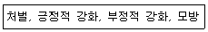
- 처벌
- 처벌, 긍정적 강화
- 처벌, 긍정적 강화, 부정적 강화
- 처벌, 긍정적 강화, 부정적 강화, 모방
(정답률: 84%)
12. Maslow의 5단계 욕구 중 “금강산도 식후경”이라는 속담의 의미와 일치하는 욕구는?
- 생리적 욕구
- 안전의 욕구
- 자기실현의 욕구
- 소속 및 애정의 욕구
(정답률: 86%)
13. 무작위적 반응 중에서 긍정적 결과가 뒤따르는 반응들을 통해서 행동이 증가하는 학습법칙은?
- 시행착오 법칙
- 효과의 법칙
- 연습의 법칙
- 연합의 법칙
(정답률: 63%)
14. 두 변인 간의 높은 정적 상관을 보이는 산포도의 형태는?
- 좌상단에서 우하단으로 가면서 흩어진 정도가 매우 큰 산포도
- 좌상단에서 우하단으로 가면서 흩어진 정도가 매우 작은 산포도
- 좌하단에서 우상단으로 가면서 흩어진 정도가 매우 큰 산포도
- 좌하단에서 우상단으로 가면서 흩어진 정도가 매우 작은 산포도
(정답률: 71%)
15. 통계적 검증력이 증가하는 경우는?
- 표본의 크기가 작은 경우
- 각 전집 표준편차의 크기가 다른 경우
- 양방검증 대신 일반검증을 채택한 경우
- 제 2종 오류인 β를 늘리는 경우
(정답률: 50%)
16. 강화계획 중 소거에 대한 저항이 가장 큰 것은?
- 고정간격 강화계획
- 변동간격 강화계획
- 고정비율 강화계획
- 변동비율 강화계획
(정답률: 71%)
17. 방어기제와 그 예가 틀리게 짝지어진 것은?
- 대치-방문을 세게 쾅 닫으며 화를 내게 만든 사람이 아닌 다른 사람에게 소리 지르는 경우
- 합리화-자기 자신이 부정직하다고 생각하기 때문에 다른 사람도 역시 부정직하다고 판단하는 경우
- 동일시-괴롭힘을 당한 아이가 다른 아이들을 괴롭히는 사람이 되는 경우
- 승화-분노를 축구나 럭비 또는 신체접촉이 이루어지는 스포츠를 함으로써 해소하는 경우
(정답률: 64%)
18. 겉맞추기(matching) 현상과 관련된 매력의 결정요인은?
- 근접성
- 친숙성
- 유사성
- 상보성
(정답률: 74%)
19. 기억 정보의 인출에 대한 설명으로 옳은 것은?
- 인출 시의 맥락과 부호화 시의 맥락이 유사할 때 인출 가능성이 클 것이라는 주장을 부호화 명세성(특수성) 원리라고 한다.
- 설단현상은 특정 정보가 저장되어 있지 않다는 증거로 볼 수 있다.
- 회상과 같은 명시적 인출방법과 대조되는 방법으로 재인과 같은 암묵적 방법이 있다.
- 기억탐색 과정은 일반적으로 외부적 자극정보를 부호화하는 과정을 말한다.
(정답률: 56%)
20. 특질을 기본적인 특질과 부수적인 특질로 구분하는 경우, 기본적인 특질에 해당하지 않은 것은?
- Allport의 중심 성향
- Eysenck의 외향성
- Cattell의 원천 특질
- Allport의 2차적 성향
(정답률: 73%)
2과목: 이상심리학
21. 알츠하이머병으로 인한 신경인지장애에 관한 설명으로 틀린 것은?
- 여성호르몬 estrogen과 상관이 있다.
- Apo-E 유전자 형태와 관련이 있다.
- 허혈성 혈관 문제 혹은 뇌경색과 관련이 있다.
- 노인성 반점(senile plaques)과 신경섬유다발(neurofibrillary tangle)과 관련이 있다.
(정답률: 43%)
22. 알코올 금단에 대한 설명으로 틀린 것은?
- 과도하게 장기적으로 사용하다가 중단(혹은 감량)후에 나타난다.
- 수시간에서 수일 이내에 진전, 오심 및 구토 등이 나타난다.
- 알코올 금단을 경험하는 대부분의 사람들은 진전섬망을 경험한다.
- 알코올이나 벤조디아제핀을 투여하면 금단중상이 경감된다.
(정답률: 55%)
23. 이상행동의 설명모형 중 통합적 입장에 해당하는 것은?
- 대상관계이론
- 사회적 학습이론
- 소인-스트레스 모델
- 세로토닌-도파민 가성
(정답률: 64%)
24. 다음 ()에 알맞은 증상은?
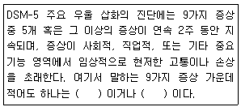
- 우울기분-무가치감
- 불면-무가치감
- 우울기분-흥미나 즐거움의 상실
- 불면-사고력이나 집중력의 감소
(정답률: 71%)
25. DSM-5 사회공포증 진단 기준이 틀린 것은?
- 사회적 상황에서 수치스럽거나 당혹스런 방식으로 행동할까봐 두려워한다.
- 공포가 너무 지나치거나 비합리적임을 인식하지 못한다.
- 공포, 불안, 회피는 전형적으로 6개월 이상 지속되어야 한다.
- 공포가 대중 앞에서 말하거나 수행하는 것에 국한될 때 수행형 단독으로 명시한다.
(정답률: 54%)
26. 이상심리학의 역사에 대한 설명으로 옳은 것은?
- Hippocrates는 정신병자에게 인도주의적 대우를 해 주어야 한다고 주장한 최초의 사람이다.
- Kraepelin은 치료와 입원이 필요한 정신장애에 대한 분류 체계를 제시하였다.
- 1939년에는 최초의 집단용 지능 검사인 Wechsler 검사가 제작되었다.
- 1948년 세계 보건 기구는 정신장애 분류 체계인 DSM-Ⅰ을 발표하였다.
(정답률: 48%)
27. 70세가 넘은 할아버지가 기억력 저하를 호소한다. 가장 가능성이 적은 문제는?
- 뇌경색
- 알츠하이머병
- 주요우울장애
- 정신병질
(정답률: 57%)
28. 도박장애는 DSM-5의 어느 진단 범주에 속하는가?
- 성격장애
- 파괴적, 충동조절 및 품행 장애
- 물질관련 및 중독 장애
- 적응장애
(정답률: 79%)
29. 타인에 대한 강한 불신과 의심을 가지고 적대적인 태도를 나타내어 사회적 부적응을 나타내는 성격특성을 지닌 것은?
- 편집성 성격장애
- 조현성 성격장애
- 반사회성 성격장애
- 연극성 성격장애
(정답률: 59%)
30. 다음 중 정신장애에 대한 사회문화적 치료와 가장 거리가 먼 것은?
- 커플치료
- 집단치료
- 가족치료
- 게슈탈트
(정답률: 64%)
31. 주의력결핍 과잉행동 장애(ADHD)에 대한 설명으로 가장 적절하지 않은 것은?
- 유전성이 높다.
- 학령전기에는 과잉행동이, 초등학생 시기에는 부주의 증상이 더욱 두드러진다.
- 페닐알리닌 수산화 효소 부족으로 인해 발생한다.
- 몇 가지의 부주의 또는 과잉행동-충동성 증상을 12세 이전에 나타나야 한다.
(정답률: 52%)
32. 강간, 폭행, 교통사고, 자연재해. 가족이나 친구의 죽음 등 충격적 사건에 뒤따라 침습증상, 지속적 회피, 인지와 감정의 부정적 변화ㅡ 각성과 반응성의 뚜렷한 변화 등이 나타나는 심리적 장애는?
- 주요 우울증
- 공황장애
- 외상후 스트레스 장애
- 강박장애
(정답률: 78%)
33. 경계성 성격장애의 치료에 대한 설명으로 틀린 것은?
- 대상관계적 이론가들은 초기에 부모로부터 수용받지 못해 자존감 상실, 의존성 증가, 분리에 대한 대처 능력 부족 등이 나타난다고 보았다.
- 변증법적 행동치료에서는 내담자 중심 치료의 공감이나 무조건적인 수용을 비판하고 지시적인 방법으로 경계성 성격장애를 가진 사람들의 행동을 수정하는 데 집중한다.
- 정신역동적 치료자들은 경계성 성격장애를 가진 사람들이 아동기에 겪은 갈등을 치유하는 데 집중한다.
- 인지치료에서는 경계성 성격장애를 가진 사람들의 인지적 오류를 수정하려고 한다.
(정답률: 67%)
34. 조현병의 증상 중 의지결여, 정서의 메마름, 언어빈곤, 사회적 철회 등은 다음 중 무엇에 해당하는가?
- 양성 증상
- 음성 증상
- 혼란 증상
- 만성 증상
(정답률: 70%)
35. 우울증의 원인론에 관한 설명으로 틀린 것은?
- 생리학적으로 세로토닌 수준이 높아지면 우울증에 걸리게 된다고 설명하고 있다.
- Freud의 정신분석이론에서 상징적 상실 또는 상상의 상실로 설명하고 있다.
- Beck의 인지이론에서 인지적 왜곡으로 우울증을 설명하고 있다.
- 자신의 삶을 통제할 수 없다는 느낌과 개인의 수동적 태도가 학습되어 무기력감을 가지게 된 결과가 우울증을 유발한다는 주장이 있다.
(정답률: 65%)
36. 신경발달장애에 해당하지 않는 것은?
- 발달성 협응장애
- 탈억제성 사회적 유대감 장애
- 상동증적 운동장애
- 투렛장애
(정답률: 71%)
37. 급식 및 섭식장애에서 부적절한 보상행동에 포함되는 것은?
- 폭식
- 과식
- 되새김
- 하제 사용
(정답률: 62%)
38. 조현병의 좋은 예후 요인을 모두 고른 것은?
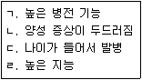
- ㄱ, ㄴ
- ㄱ, ㄷ, ㄹ
- ㄴ, ㄷ, ㄹ
- ㄱ, ㄴ, ㄷ, ㄹ
(정답률: 50%)
39. 성별 불쾌감에 대한 설명으로 틀린 것은?
- 자신의 1차 및 2차 성징을 제거하고자 하는 강한 갈망이 있다.
- 반대 성이 되고 있은 강한 갈망이 있다.
- 반대 성의 전형적인 느낌과 반응을 가지고 있다는 강한 확신이 있다.
- 강력한 성적 흥분을 느끼기 위해 반대 성의 옷을 입는다.
(정답률: 75%)
40. 다음에 제시된 장애유형 중 같은 유형으로 모두 묶은 것은?
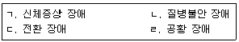
- ㄱ, ㄴ
- ㄴ, ㄷ, ㄹ
- ㄱ, ㄴ, ㄷ
- ㄱ, ㄴ, ㄷ, ㄹ
(정답률: 61%)
3과목: 심리검사
41. 스탠포드-비네 지능검사에 대한 설명으로 틀린 것은?
- IQ는 대부분의 점수가 100 근처에 모인다.
- 언어성 검사와 동작성 검사 두 부분으로 나누어져 있다.
- 언어 추리, 추상적/시각적 추리, 양, 추리, 단기기억 영역을 포함한다.
- IQ 분포는 종 모양의 정상분포 곡선을 그린다.
(정답률: 53%)
42. MMPI-2내용척도 CYN의 설명과 가장 거리가 먼 것은?
- 근거 없는 염세적 신념을 보인다.
- 자신의 위선, 속임수를 정당화한다.
- 어려움에 쉽게 포기하거나 타인에게 복종한다.
- 쉽게 비난받는다고 여기며 타인을 경계한다.
(정답률: 58%)
43. 뇌손상의 영향에 관한 설명으로 가장 적합한 것은?
- 뇌손상 이후 일반적인 지적능력을 유지하지 못하여 원래의 지적 능력 수준이 떨어진다.
- 의사소통장애가 있는 모든 뇌손상환자들이 실어증을 수반한다.
- 뇌손상이 있는 환자는 복잡한 자극보다는 단순한 자극에 더 시지각장애를 보인다.
- 뇌손상이 있는 환자는 대부분 일차 기억보다 최신 기억을 더 상세하게 기억한다.
(정답률: 60%)
44. 다음 K-WAIS 검사 결과가 나타내는 정신장애로 가장 적합한 것은?
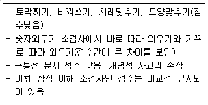
- 강박장애
- 기질적 뇌손상
- 불안장애
- 반사회성 성격장애
(정답률: 67%)
45. 표준화된 검사가 다른 검사에 비하여 객관적인 해석을 가능하게 해주는 이유로 가장 적합한 것은?
- 타당도가 높기 때문이다.
- 규준이 마련되어 있기 때문이다.
- 신뢰도가 높이 때문이다.
- 실시가 용이하기 때문이다.
(정답률: 65%)
46. Rorschach 검사의 질문단계에서 검사자의 질문 또는 반응으로 가장 적절하지 않은 것은?
- “말씀하신 것은 주로 형태인가요?”, “색깔인가요?”
- “당신이 어디를 그렇게 보았는지를 잘 모르겠네요,”
- “그냥 그렇게 보인다고 하셨는데 어떤 것을 말씀하지는 것인지 조금 더 구체적으로 설명해 주세요”
- “그것처럼 보이게 만든 것은 무엇인가요?”
(정답률: 57%)
47. MMPI-2에서 4-6코드의 대표적인 특성으로 옳은 것은?
- 기묘한 성적 강박관념과 반응을 가질 수 있다.
- 외향적이고 수다스러우며 사교적이면서도 긴장하고 안절부절못한다.
- 연극적이고 증상과 관련된 수단을 통해 사람을 통제한다.
- 자신의 잘못에 대해 타인을 비난하기 때문에 이에 대한 자신의 통찰이 약하다.
(정답률: 59%)
48. 조직에서 직원을 선발할 때 적성검사를 사용하는 경우, 적성검사의 준거관련타당도는 어떻게 구하는 것이 가장 바람직한가?
- 적성검사의 요인을 분석한다.
- 적성검사와 다른 선발용 검사와의 상관을 구한다.
- 적성검사의 내용을 전문가들이 판단하도록 한다.
- 적성검사와 직원이 입사 후 이들이 직무수행점수와의 상관을 구한다.
(정답률: 67%)
49. MMPI-2에서 임상척도의 중요성을 평가할 때 고려할 사항과 가장 거리가 먼 것은?
- 전체프로파일 해석에서 타당도척도보다 임상척도를 먼제 해석해야 한다.
- 정신병리에 대해 임상척도와 소척도를 함께 살펴봐야 한다.
- 정신병리를 측정하는 내용 척도 및 내용 소척도와도 비교해야 한다.
- 연령이나 성별과 같은 인구통계학적 변인들과 임상척도들 사이의 관계를 고려해야 한다.
(정답률: 72%)
50. 실행적 기능(executive function)을 담당하는 뇌 부위가 손상된 환자에 대한 평가결과와 가장 거리가 먼 것은?
- BGT에서 도형의 배치 순서를 평가하는 항목의 점수가 유의하게 낮다.
- Trail Making Test에서 반응시간이 평균보다 2표준편차이상 높았다.
- Stoop test의 간섭시행 단계에서 특히 점수가 낮았다.
- 웩슬러 지능검사에서 상식 소검사의 점수가 유의하게 낮았다.
(정답률: 60%)
51. WAIS-IV의 연속적인 수준 해석 절차의 2단계는?
- 소검사 반응내용 분석
- 전체척도 IQ해석
- 소검사 변산성 해석
- 지수점수 및 CHC 군집 해석
(정답률: 41%)
52. 신경인지장애가 의심되는 노인 환자를 대상으로 실시하기에 적합하지 않은 검사는?
- NEO-PI-R
- MMSE
- COWA Test
- CERAD
(정답률: 51%)
53. 아동용 시지각-운동통합의 발달검사로, 24개의 기하학적 형태의 도형으로 이루어진 지필검사는?
- VMI
- BGT
- CPT
- CBCL
(정답률: 46%)
54. 지능이론에 대한 설명으로 옳은 것은?
- Thurstone은 지능이 g요인과 s요인으로 구분하여 지능의 개념을 가정하였다.
- Cattell은 지능을 선천적이며 개인의 경험과 무관한 결정성 지능과, 후천적이며 학습된 지식과 관련된 유동성 지능으로 구분하였다.
- Gardner는 다중지능을 기술하여 언어적, 음악적, 공간적 등 여러 가지 지능이 있다고 하였다.
- Spearman은 지능을 7개의 요인으로 구성되어 있다고 보는 다요인설을 주장하고, 이를 인간의 기본정신능력이라고 하였다.
(정답률: 42%)
55. 노인을 대상으로 HTP 검사를 실시하는 방법으로 옳은 것은?
- 노인의 보호자가 옆에서 지켜보면서 격려하도록 한다.
- HTP 실시할 때 각 대상은 별도의 용지를 사용하여 실시한다.
- 그림을 그린 다음에는 수정하지 못하게 한다.
- 그림이 완성된 후 보호자에게 사후 질문을 하는 것이 일반적이다.
(정답률: 69%)
56. 발달검사의 특징에 관한 설명으로 옳은 것은?
- 아동을 직접 검사하지 않고 보호자의 보고에 의존하는 발달검사도구도 있다.
- 발달검사의 목적은 유아의 지적능력 파악이 주목적이다.
- 영유아 기준 발달상 미숙한 단계이므로 다양한 영역을 측정하기 어렵다.
- 발달검사는 주로 언어이해 및 표현능력으로 구성되어 있다.
(정답률: 65%)
57. MMPI의 타당도 척도 중 평가하는 내용이 나머지와 다른 하나는?
- F
- K
- L
- S
(정답률: 41%)
58. Guilford의 지능구조(Structure of Intellect, SOI) 3요소가 아닌 것은?
- 조작(operations)
- 내용(contents)
- 과정(processes)
- 결과물(products)
(정답률: 34%)
59. MMPI-2에서 타당성을 고려할 때 “?” 지표에 대한 설명으로 틀린 것은?
- 각 척도별 “?” 반응의 비율을 확인해 보는 것은 유용할 수 있다.
- “?” 반응이 300번 이내의 문항에서만 발견되었다면 L, F, K 척도는 표준적인 해석이 가능하다.
- “?” 반응이 3개 미만인 경우에도 해당 문항에 대한 재반응을 요청하는 등의 사전검토 작업이 필요하다.
- “?” 반응은 수검자가 질문에 대해 답변을 하지 않을 경우뿐만 아니라 ‘그렇다’와 ‘아니다’에 모두 응답했을 경우에도 해당된다.
(정답률: 51%)
60. K-WISC-IV를 통해 일반능력을 알아볼 수 있는 소검사끼리 바르게 묶인 것은?
- 공통그림찾기, 단어추리, 순차연결
- 상식, 숫자, 동형찾기
- 공통성, 토막짜기, 이해
- 행렬추리, 기호쓰기, 어휘
(정답률: 53%)
4과목: 임상심리학
61. 건강심리학 분야의 초점 영역과 가장 거리가 먼 것은?
- 고혈압
- 과민성 대장증후군
- 결핵
- 통증
(정답률: 63%)
62. 아동을 상담할 때 일반적으로 고려해야 할 사항과 가장 거리가 먼 것은?
- 아동에게 치료 중 일어난 일은 성인의 경우와 마찬가지로 부모 등에게는 반드시 비밀로 유지되어야만 한다.
- 아동은 놀이를 통해 자신의 생각과 감정을 표현하기 때문에 놀이의 기능을 중요하게 다루어야 한다.
- 아동은 발달과정에 있기 때문에 생활조건을 변화시키는데 있어 거의 무력하다.
- 이동은 부모에게 의존적 상태에 있기 때문에 상담자는 가족의 역동을 이해하고 변화시키는 것이 바람직하다.
(정답률: 66%)
63. 지역사회 심리학에서 지향하는 바가 아닌 것은?
- 자원 봉사자 등 비전문 인력의 활용
- 정신 장애의 예방
- 정신 장애인의 사회 복귀
- 정신병원시설의 확장
(정답률: 64%)
64. 심리치료 장면에서 치료자의 3가지 기본 특성 혹은 태도가 강조된다. 이는 인간중심심리치료의 기본적 치료 기제로도 알려져 있는데, 이러한 치료자의 기본 특성에 해당되지 않는 것은?
- 무조건적인 존중
- 정확한 공감
- 적극적 경청
- 진솔성
(정답률: 46%)
65. 임상심리학자의 윤리에 관한 일반원칙 중 다음에 해당하는 것은?
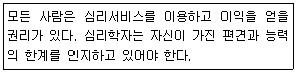
- 공정성
- 유능성
- 성실성
- 권리와 존엄성의 존중
(정답률: 42%)
66. Dougherty가 정의한 임상심리학자들의 6가지 공통적인 자문 역할에 해당하지 않는 것은?
- 협력자
- 진상 조사자
- 옹호자
- 조직 관리자
(정답률: 42%)
67. 심리치료기법에서 해석에 관한 설명으로 적절하지 못한 것은?
- 핵심적인 주제가 더 잘 드러나도록 사용한다.
- 저항에 대한 해석보다는 무의식적 갈등에 대한 해석을 우선시 한다.
- 내담자가 상담자의 해석을 받아들일 수 있는 것부터 해석한다.
- 내담자의 생각 중 명확하지 않은 부분에 대해 상담자가 추리하여 설명해준다.
(정답률: 46%)
68. 정신건강의학과 병동에 입원한 환자들 중 단체생활의 규칙을 잘 지키지 않는 환자들의 행동문제들을 개선하는데 가장 효과적인 치료적 접근은?
- 자기주장훈련(self-assertiveness training)
- 체계적 둔감법(systematic desensitization)
- 유관성 관리(contingency management)
- 내재적 예민화(covert sensitization)
(정답률: 65%)
69. 1950년대 이후 정신역동적 접근에 대한 대안적 접근들이 임상심리학에 많은 영향을 주었다. 이와 가장 관련이 적은 것은?
- 형태주의적 접근
- 행동주의적 접근
- 가족체계적 접근
- 생물심리사회적 접근
(정답률: 34%)
70. 자해 행동을 보이는 아동에 대한 심리평가로 가장 적합한 것은?
- 부모면접
- 자기보고형 성격검사
- 투사법 검사
- 행동평가
(정답률: 50%)
71. 다음 중 혐오치료를 적용하기에 가장 적합한 장애는?
- 광장공포증
- 소아기호증
- 우울증
- 공황장애
(정답률: 60%)
72. 다음에 제시된 방어기재 중 Vaillant의 성숙한 방어에 해당하지 않는 것은?
- 승화
- 유머
- 이타주의
- 합리화
(정답률: 71%)
73. 다음은 어떤 치료에 대한 설명인가?
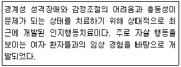
- ACT(Acceptance and Commitment Therapy)
- DBT(Dialectical Behavior Therapy)
- MBSR(Mindfulness Based Stress Reduction)
- EMDR(Eye Movement Desensitization and Reprocessing)
(정답률: 56%)
74. 원판 MMPI에 관한 설명으로 가장 거리가 먼 것은?
- T점수로 변환되어 모든 척도 점수의 분포가 동일한 정규 분포가 되도록 했다.
- 적어도 중학생 이상의 독해능력 혹은 IQ 80이상 등의 조건에서 실시한다.
- 불가피한 경우가 아니면 맹목 해석(blind interpretation)을 하지 말아야 한다.
- 개별 척도의 의미 뿐만 아니라 척도의 연관성을 함께 고려해야 한다.
(정답률: 44%)
75. 투과검사의 일반적인 특성이 아닌 것은?
- 환자의 성격구조가 드러나며, 욕구, 소망, 또는 갈등을 표출시킨다.
- 자극재료의 모호성이 풍부하다.
- 반응범위가 거의 무한하게 허용된다.
- 환자의 욕구나 근심이 드러나도록 구조화하여 질문한다.
(정답률: 66%)
76. DSM-5에 관한 설명으로 옳은 것은?
- DSM-IV에 있던 GAF 점수 사용을 중단하였다.
- DSM-IV에 있던 다축진단체계를 유지한다.
- 모든 진단은 정신병리의 차원모형에 근거하고 있다.
- DSM-IV에 있던 모든 진단이 유지되었다.
(정답률: 42%)
77. 일반적으로 의미적 인출(semantic retrieval)및 일화적 부호화(episodic encoding)를 담당하는 곳은?
- 브로카의 영역
- 우전전두 피질 영역
- 베르니케 영역
- 좌전전두 피질 영역
(정답률: 31%)
78. 다음은 어떤 조건형성에 해당하는가?
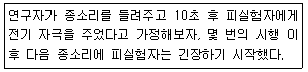
- 지연 조건형성
- 흔적 조건형성
- 동시 조건형성
- 후향 조건형성
(정답률: 40%)
79. 행동평가 방법 중 참여관찰법에 비교할 때 비참여 관찰법의 특성과 가장 거리가 먼 것은?
- 내담자의 외현적 행동을 기록하는데 유리하다.
- 관찰자 훈련에 많은 시간과 비용이 소요된다.
- 관찰자가 다른 활동 때문에 관찰에 지장을 받아 기록에 오류를 범할 가능성이 높다.
- 행동에 관한 정밀한 측정이 요구되고, 연구자가 충분한 인적 자원을 갖고 있는 경우 유용하다.
(정답률: 51%)
80. 평가자간 신뢰도를 알아보기 위한 지표로 사용되지 않는 것은?
- Pearson's Γ
- 계층 간 상관계수
- Kappa 계수
- Cronbach's alpha
(정답률: 43%)
5과목: 심리상담
81. 청소년 상담에서 특히 고려해야 할 요인과 가장 거리가 먼 것은?
- 일반적인 청소년의 발달과정에 대한 규준적 정보
- 한 개인의 발달단계와 과업수행 정도
- 내담자 개인의 영역별 발달수준
- 내담자의 이전 상담경력과 관련된 사항
(정답률: 57%)
82. AA(Alcoholic Anonymous)에서 이루어지는 활동의 대표적인 특징은?
- 알코올 중독 치료 후에 사교적인 음주를 허용한다.
- 술이나 중독물의 부작용을 생생하게 상상하고 논의한다.
- 알코올 중독을 병으로 인정하고 단주를 목표로 한다.
- 술과 함께 심한 부작용을 일으키는 혐오적 약물치료를 한다.
(정답률: 58%)
83. 사이버상담에 대한 설명으로 틀린 것은?
- 사이버상담은 전화상담처럼 자살을 비롯한 위기 상담이라는 뚜렷한 목적을 갖고 시작되었다.
- 사이버상담자들의 전문성과 윤리성 등을 통제하고 관리하는 체제가 필요하다.
- 사이버상담의 전문화를 위해 기존 면대면상담과는 다른 새로운 상담기법을 개발하고 실험을 통해 효과를 검증할 필요가 있다.
- 사이버상담은 기존의 면대면상담과 전화상담에 참여하지 않았던 새로운 내담자군의 출현을 가져왔다.
(정답률: 65%)
84. 학습문제 상담의 시간관리전략에서 강조하는 것은?
- 기억하고자 하는 의도를 갖도록 노력한다.
- 학습의 목표를 중요도와 긴급도에 따라 구체적으로 수립한다.
- 시험이 끝난 후 오답을 점검한다.
- 처음부터 장시간 공부하기 보다는 조금씩 자주 하면서 체계적으로 학습한다.
(정답률: 56%)
85. 상담의 초기단계에서 다루어야 할 내용과 가장 거리가 먼 것은?
- 도움을 청하는 직접적인 이유의 확인
- 과정적 목표의 설정과 달성
- 상담 진행방식의 합의
- 촉진적 상담관계의 형성
(정답률: 70%)
86. Rogers의 인간중심 상담에 대한 설명으로 틀린 것은?
- 내담자는 불일치 상태에 있고 상처받기 쉬우며 초조하다.
- 상담자는 내담자와의 관계에서 일치성을 보이며 통합적이다.
- 상담자는 내담자의 내적 참조 틀을 바탕으로 한 공감적 이해를 경험하고 내담자에게 자신의 경험을 전달하려고 시도한다.
- 내담자는 의사소통의 과정에서 상담자의 선택적인 긍정적 존중 및 공감적 이해를 지각하고 경험한다.
(정답률: 39%)
87. 상담자가 내담자를 직면시키기에 바람직한 시기가 아닌 것은?
- 문제가 드러날 때 즉각적으로 내담자의 잘못을 직면시켜서 뉘우치게 한다.
- 내담자와 적당한 신뢰관계가 형성되었을 때 시도한다.
- 내담자의 말과 행동의 불일치가 보일 때 시도한다.
- 부정적인 자아상을 가진 내담자가 처음 긍정적인 진술을 할 때 시도한다.
(정답률: 57%)
88. 다음 사례에서 사용된 상담기법은?
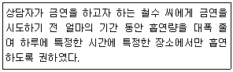
- 조건자극 줄이기(narrowing)
- 행동 감소법(action-reducing)
- 연결 끊기(link-cutting)
- 중독 둔감법(de-sensing)
(정답률: 40%)
89. Adler 상담이론의 주요 개념이 아닌 것은?
- 우월성 추구
- 자기 초월
- 생활양식
- 사회적 관심
(정답률: 49%)
90. 상담에서 나타날 수 있는 윤리적 갈등의 해결단계를 바르게 나열한 것은?
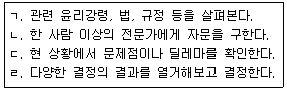
- ㄱ→ㄷ→ㄴ→ㄹ
- ㄴ→ㄷ→ㄱ→ㄹ
- ㄷ→ㄱ→ㄴ→ㄹ
- ㄷ→ㄱ→ㄹ→ㄴ
(정답률: 67%)
91. 집단상담의 후기 단계에서 주어지는 피드백에 대한 설명으로 틀린 것은?
- 구성원들에게 친밀감, 독립적인 평가를 제공할 수 있다.
- 긍정적인 피드백은 적절한 행동을 강화할 수 있다.
- 지도자는 효과적인 피드백 모델이 될 수 있다.
- 교정적인 피드백이 긍정적인 피드백보다 중요하다.
(정답률: 70%)
92. 성피해자에 대한 심리치료 과정 중 초기 단계에서 상담자가 유의해야 할 사항과 가장 거리가 먼 것은?
- 치료의 관계형성을 위해 수치스럽고 창피한 감정이 정상적인 감정임을 공감한다.
- 피해상황에 대한 진술은 상담자 주도로 이루어져야 한다.
- 성피해 사실에 대한 내담자의 부정을 허락한다.
- 내담자에게 치료자에 대한 감정을 묻고 치료자를 선택할 수 있도록 해 준다.
(정답률: 70%)
93. 진로상담의 목표와 가장 거리가 먼 것은?
- 내담자가 이미 결정한 직업적인 선택과 계획을 확인하도록 돕는다.
- 내담자가 자신의 직업적 목표를 명확하게 해 준다.
- 내담자로 하여금 자아와 직업세계에 대한 구체적인 이해와 새로운 사실을 발견하도록 한다.
- 직업선택과 직업생활에서 순응적인 태도를 함양하도록 돕는다.
(정답률: 67%)
94. 다음 설명에서 해당하는 Golan의 위기단계는?
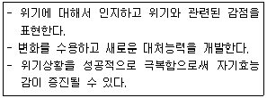
- 취약상태
- 촉진적요인
- 위기상태
- 재통합
(정답률: 60%)
95. 다음 중 상담의 바람직한 목표설정 방향과 가장 거리가 먼 것은?
- 목표는 구체적이어야 한다.
- 목표는 실현가능해야 한다.
- 목표는 상담자의 의도에 맞추어야 한다.
- 목표는 내담자가 원하고 바라는 것이어야 한다.
(정답률: 70%)
96. 게슈탈트 상담에 대한 설명으로 틀린 것은?
- 보조자아(auxiliary ego) 활용은 집단 상담에 많이 사용하는 기법으로 한 구성원의 문제를 집중적으로 다룬다.
- 알아차림(awareness)과 접촉(contact)을 방해하는 한 요인인 융합(confluence)은 자신과 타인의 경계가 불분명한 지점에서 타인의 의견에 동의하는 것이다.
- Zinker는 알아차림-접촉 주기를 배경, 감각, 알아차림, 에너지/흥분, 행동, 접촉 등 여섯 단계로 설명한다.
- 알아차림은 개체가 자신의 유기체적 욕구나 감정을 지각한 다음 게슈탈트를 형성하여 명료한 전경으로 떠올리는 것을 말한다.
(정답률: 50%)
97. 다음에 제시된 집단상담 경험에 해당하는 치료적 요인은?
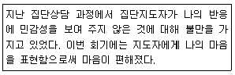
- 자기이해
- 대리학습
- 정화
- 대인간 행동학습
(정답률: 55%)
98. 처벌을 사용할 때 고려해야 할 사항이 아닌 것은?
- 강도
- 융통성
- 일관성
- 즉시성
(정답률: 72%)
99. 기본적 오류에 대한 옳은 설명을 모두 고른 것은?
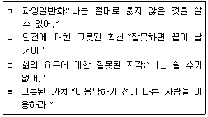
- ㄱ, ㄴ
- ㄴ, ㄷ
- ㄴ, ㄷ, ㄹ
- ㄱ, ㄴ, ㄷ, ㄹ
(정답률: 40%)
100. 단기상담에 적합한 내담자의 특성으로 옳은 것은?
- 반사회적 성격장애가 있다.
- 구체적이거나 발달과정상의 문제가 있다.
- 지지적인 대화상대자가 전혀 없다.
- 만성적이고 복합적인 문제가 있다.
(정답률: 53%)